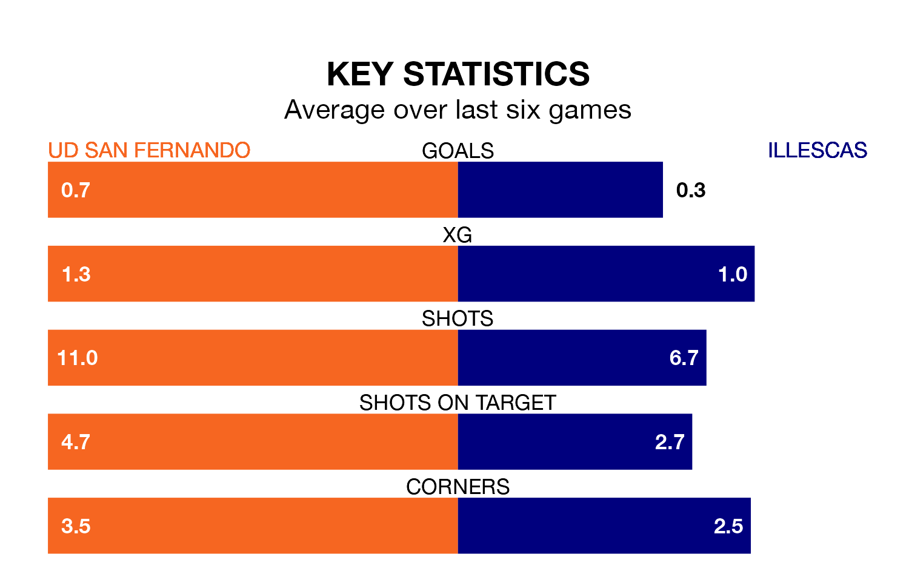

Illescas come to play UD San Fernando on Sunday lunchtime in terrible form, having collected just two points from their last six games.
The visitors have drawn two and lost four of their last six fixtures, while San Fernando have two wins and two draws.
With 23 goals in 29 games so far this season, San Fernando are the league's second-lowest scorers with 0.8 goals per game. And they are conceding at an average rate, letting in 32 goals at a rate of 1.1 per game.
Illescas, meanwhile, are average scorers, with 1.1 goals per game. They have conceded 0.9 goals per game.
The hosts are 14th in the table after 29 games, of which they have won nine and drawn eight, earning 35 points.
The away team are seven places ahead of San Fernando in seventh, with 11 wins and nine draws putting them on 42 points.
San Fernando's last match was on March 31, a 1-1 draw against Atlético Paso.
Illescas lost 2-1 against Guadalajara last time out, also on March 31, with Víctor García Mingo on the scoresheet.
Updated: 16:41 (UTC), 04/04/24